The work of street photographer Shin Noguchi is a prose poem written for ordinary daily life. He carries a Leica and walks through Tokyo and Kamakura. He uses his camera as a medium. He does not create art. He only finds the art that life already holds. Under his warm shutter, the real moments on street corners and in homes become eternal. They quietly prove his belief: the greatest creation is life itself.
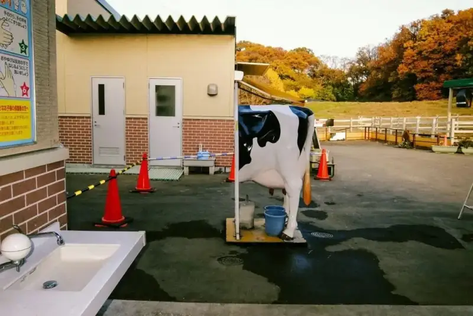
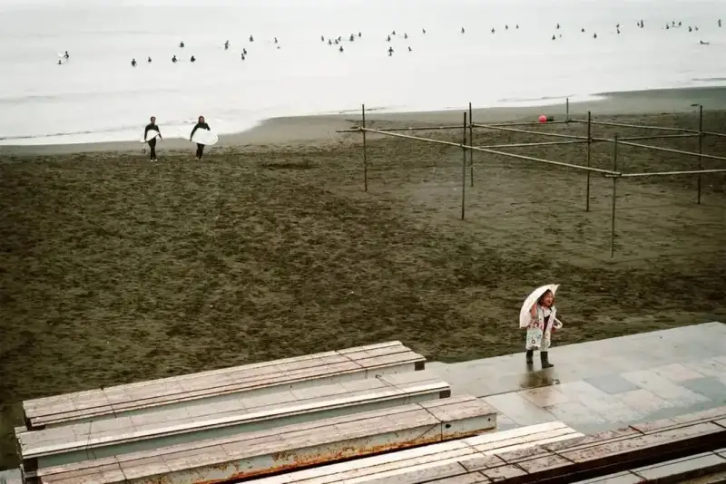
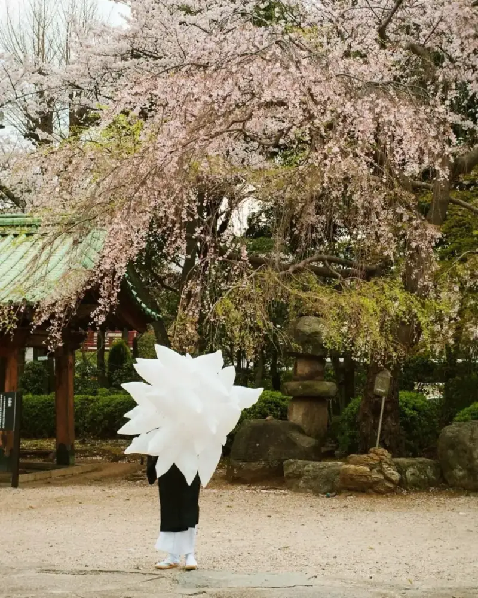
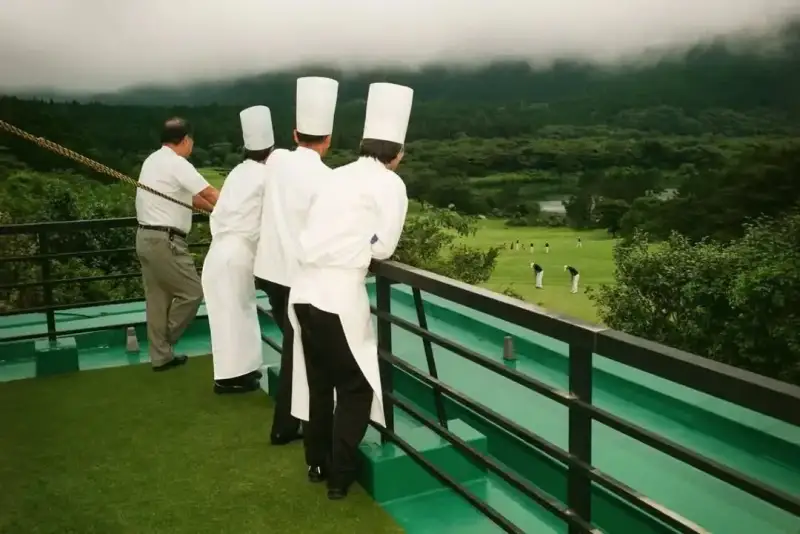
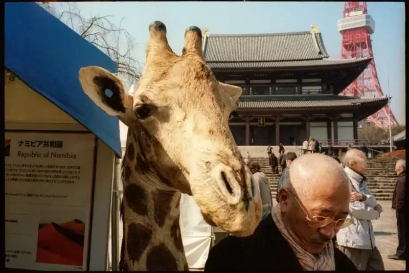
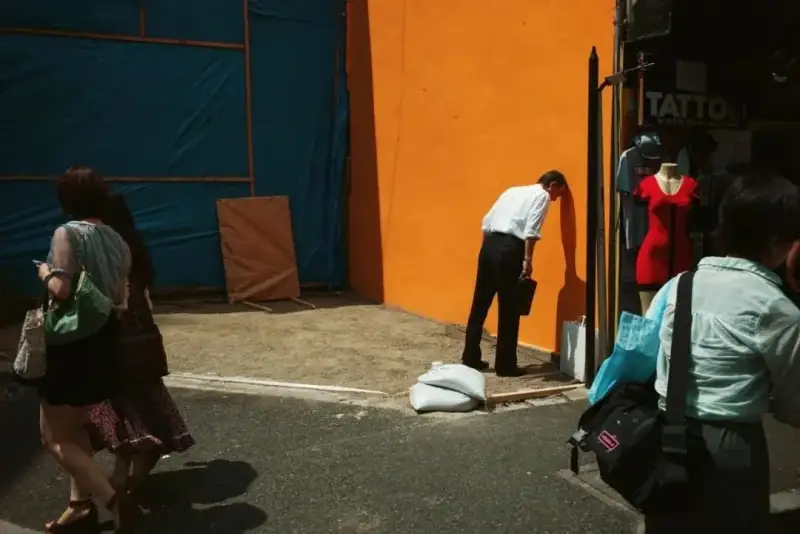
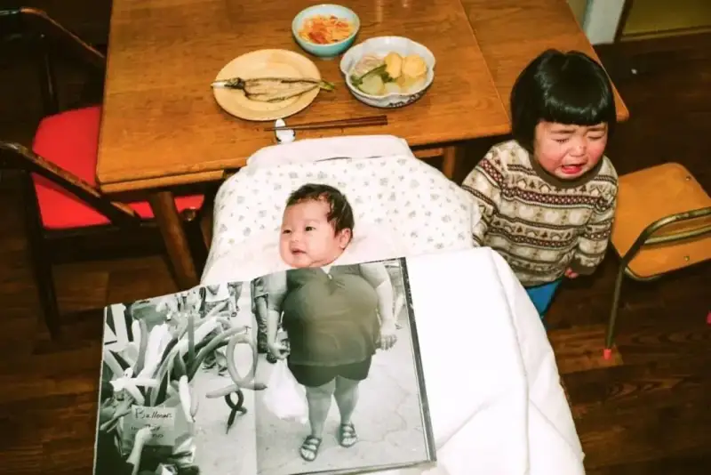
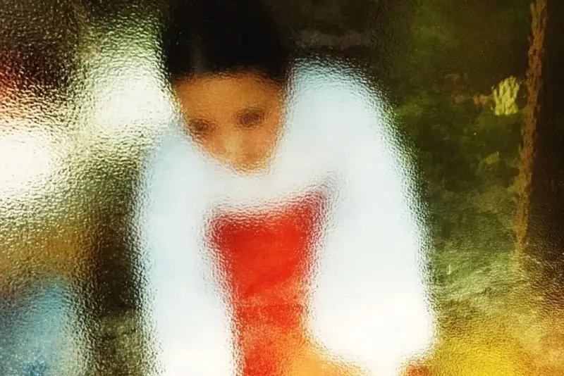
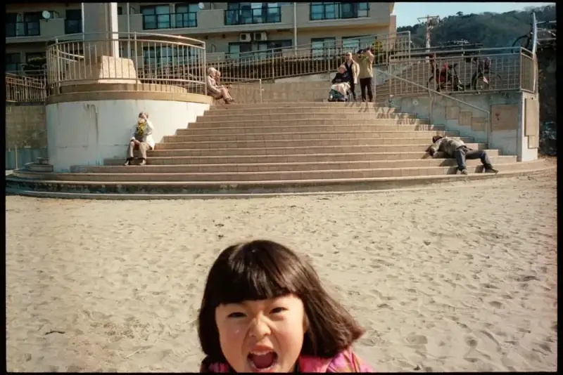
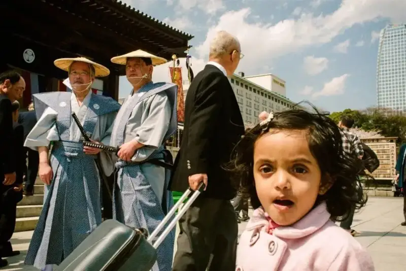
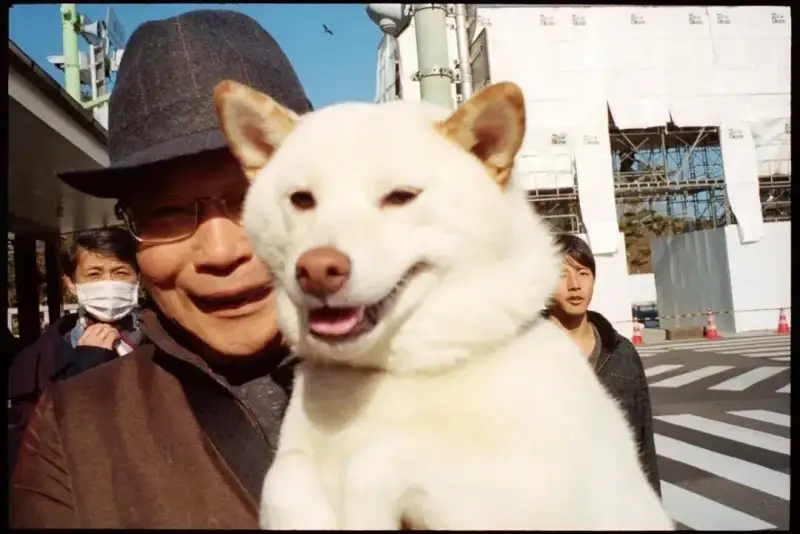
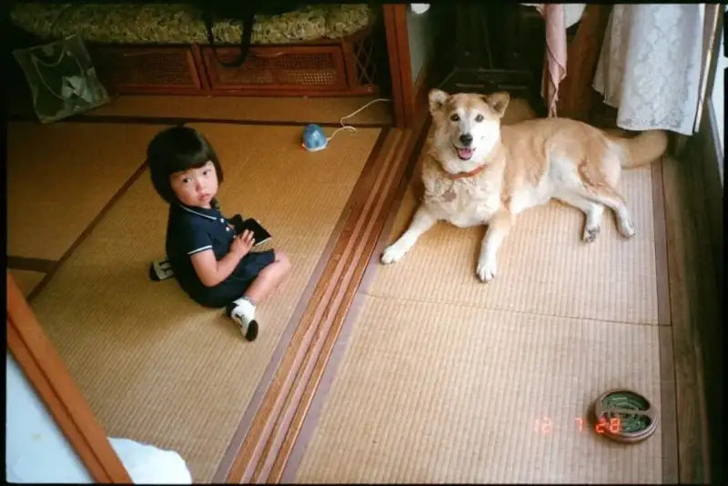
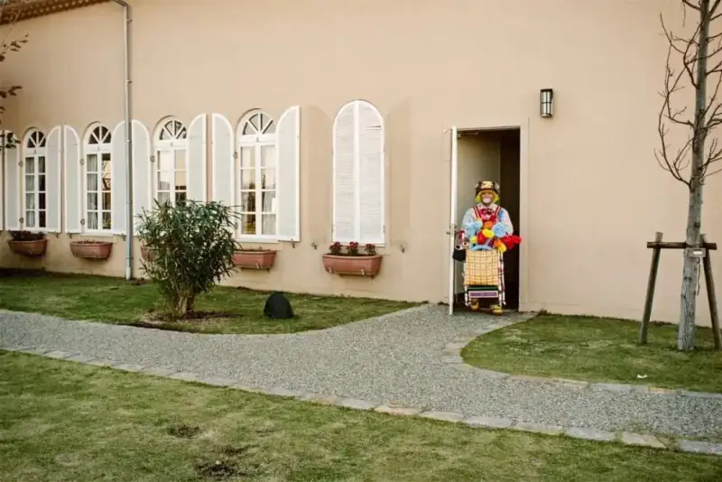
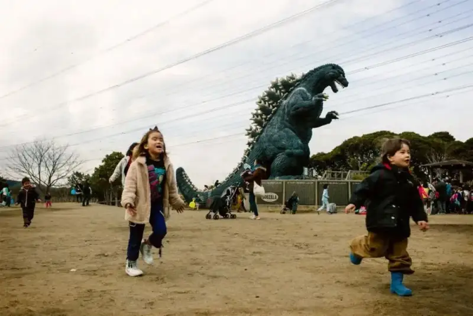
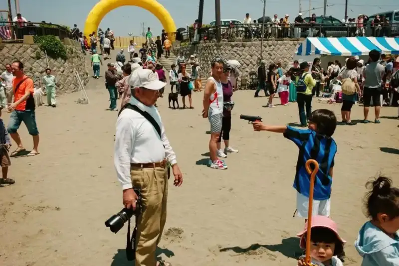
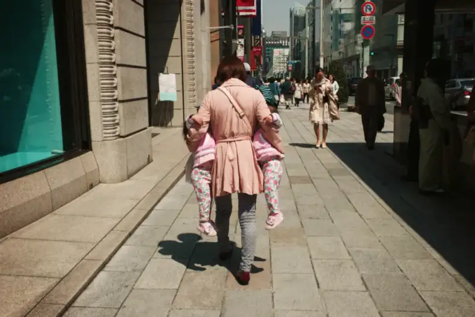